library(stringr)
library(dplyr)
library(tidyr)
library(tidyverse)
library(tidytext)
library(textdata)
library(janeaustenr)
library(ggplot2)
library(knitr)
library(kableExtra)
library(rvest)
library(jsonlite)
library(bslib)
library(shiny)
library(wordcloud)
library(reshape2)
library(devtools)
library(rtweet)
library(gutenbergr)Data607: Sentiment Analysis
General Overview
In this Assignment, we will obtain a code example from Chapter 2 of Textmining with R.
The following assignment will be accessible via my GitHub Repository.
The following libraries will be used in this assignment:
Get sentiments datasets
This code block will get the sentiments datasets for AFINN, Bing et al., and NRC.
# get sentiments for afinn, bing and nrc
get_sentiments("afinn")# A tibble: 2,477 × 2
word value
<chr> <dbl>
1 abandon -2
2 abandoned -2
3 abandons -2
4 abducted -2
5 abduction -2
6 abductions -2
7 abhor -3
8 abhorred -3
9 abhorrent -3
10 abhors -3
# ℹ 2,467 more rowsget_sentiments("bing")# A tibble: 6,786 × 2
word sentiment
<chr> <chr>
1 2-faces negative
2 abnormal negative
3 abolish negative
4 abominable negative
5 abominably negative
6 abominate negative
7 abomination negative
8 abort negative
9 aborted negative
10 aborts negative
# ℹ 6,776 more rowsget_sentiments("nrc")# A tibble: 13,872 × 2
word sentiment
<chr> <chr>
1 abacus trust
2 abandon fear
3 abandon negative
4 abandon sadness
5 abandoned anger
6 abandoned fear
7 abandoned negative
8 abandoned sadness
9 abandonment anger
10 abandonment fear
# ℹ 13,862 more rowsSentiment Analysis with inner_join
This code block will perform sentiment analysis with an inner join.
#tidy the data
tidy_books <- austen_books() %>%
group_by(book) %>%
mutate(
linenumber = row_number(),
chapter = cumsum(str_detect(text,
regex("^chapter [\\divxlc]",
ignore_case = TRUE)))) %>%
ungroup() %>%
unnest_tokens(word, text)
# sentiment analysis with inner join
nrc_joy <- get_sentiments("nrc") %>%
filter(sentiment == "joy")
tidy_books %>%
filter(book == "Emma") %>%
inner_join(nrc_joy) %>%
count(word, sort = TRUE)Joining with `by = join_by(word)`# A tibble: 301 × 2
word n
<chr> <int>
1 good 359
2 friend 166
3 hope 143
4 happy 125
5 love 117
6 deal 92
7 found 92
8 present 89
9 kind 82
10 happiness 76
# ℹ 291 more rows## Positive and Negative Sentiments
jane_austen_sentiment <- tidy_books %>%
inner_join(get_sentiments("bing")) %>%
count(book, index = linenumber %/% 80, sentiment) %>%
pivot_wider(names_from = sentiment, values_from = n, values_fill = list(n = 0)) %>%
mutate(sentiment = positive - negative)Joining with `by = join_by(word)`Warning in inner_join(., get_sentiments("bing")): Detected an unexpected many-to-many relationship between `x` and `y`.
ℹ Row 435434 of `x` matches multiple rows in `y`.
ℹ Row 5051 of `y` matches multiple rows in `x`.
ℹ If a many-to-many relationship is expected, set `relationship =
"many-to-many"` to silence this warning.# Now to plot
ggplot(jane_austen_sentiment, aes(index, sentiment, fill = book)) +
geom_col(show.legend = FALSE) +
facet_wrap(~book, ncol = 2, scales = "free_x")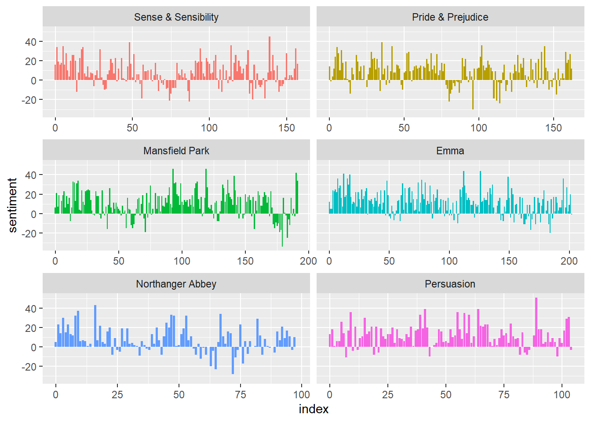
Comparing the three sentiment dictionaries
This code block will compare the three sentiment dictionaries AFINN, Bing et al., and NRC.
# Filter book Pride and Prejudice
pride_prejudice <- tidy_books %>%
filter(book == "Pride & Prejudice")
pride_prejudice# A tibble: 122,204 × 4
book linenumber chapter word
<fct> <int> <int> <chr>
1 Pride & Prejudice 1 0 pride
2 Pride & Prejudice 1 0 and
3 Pride & Prejudice 1 0 prejudice
4 Pride & Prejudice 3 0 by
5 Pride & Prejudice 3 0 jane
6 Pride & Prejudice 3 0 austen
7 Pride & Prejudice 7 1 chapter
8 Pride & Prejudice 7 1 1
9 Pride & Prejudice 10 1 it
10 Pride & Prejudice 10 1 is
# ℹ 122,194 more rowsafinn <- pride_prejudice %>%
inner_join(get_sentiments("afinn")) %>%
group_by(index = linenumber %/% 80) %>%
summarise(sentiment = sum(value)) %>%
mutate(method = "AFINN")Joining with `by = join_by(word)`bing_and_nrc <- bind_rows(
pride_prejudice %>%
inner_join(get_sentiments("bing")) %>%
mutate(method = "Bing et al."),
pride_prejudice %>%
inner_join(get_sentiments("nrc") %>%
filter(sentiment %in% c("positive",
"negative"))
) %>%
mutate(method = "NRC")) %>%
count(method, index = linenumber %/% 80, sentiment) %>%
pivot_wider(names_from = sentiment,
values_from = n,
values_fill = 0) %>%
mutate(sentiment = positive - negative)Joining with `by = join_by(word)`
Joining with `by = join_by(word)`Warning in inner_join(., get_sentiments("nrc") %>% filter(sentiment %in% : Detected an unexpected many-to-many relationship between `x` and `y`.
ℹ Row 215 of `x` matches multiple rows in `y`.
ℹ Row 5178 of `y` matches multiple rows in `x`.
ℹ If a many-to-many relationship is expected, set `relationship =
"many-to-many"` to silence this warning.bind_rows(afinn,
bing_and_nrc) %>%
ggplot(aes(index, sentiment, fill = method)) +
geom_col(show.legend = FALSE) +
facet_wrap(~method, ncol = 1, scales = "free_y")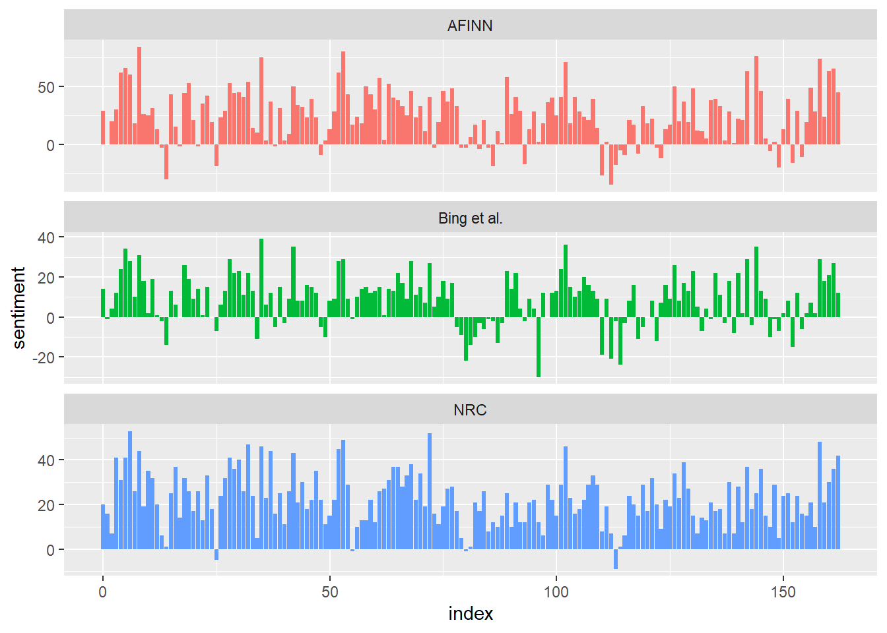
get_sentiments("nrc") %>%
filter(sentiment %in% c("positive", "negative")) %>%
count(sentiment)# A tibble: 2 × 2
sentiment n
<chr> <int>
1 negative 3316
2 positive 2308get_sentiments("bing") %>%
count(sentiment)# A tibble: 2 × 2
sentiment n
<chr> <int>
1 negative 4781
2 positive 2005Most common positive and negative words
This code block will show the most common positive and negative words in the book Pride and Prejudice.
bing_word_counts <- tidy_books %>%
inner_join(get_sentiments("bing")) %>%
count(word, sentiment, sort = TRUE) %>%
ungroup()Joining with `by = join_by(word)`Warning in inner_join(., get_sentiments("bing")): Detected an unexpected many-to-many relationship between `x` and `y`.
ℹ Row 435434 of `x` matches multiple rows in `y`.
ℹ Row 5051 of `y` matches multiple rows in `x`.
ℹ If a many-to-many relationship is expected, set `relationship =
"many-to-many"` to silence this warning.bing_word_counts# A tibble: 2,585 × 3
word sentiment n
<chr> <chr> <int>
1 miss negative 1855
2 well positive 1523
3 good positive 1380
4 great positive 981
5 like positive 725
6 better positive 639
7 enough positive 613
8 happy positive 534
9 love positive 495
10 pleasure positive 462
# ℹ 2,575 more rowsbing_word_counts %>%
group_by(sentiment) %>%
slice_max(n, n = 10) %>%
ungroup() %>%
mutate(word = reorder(word, n)) %>%
ggplot(aes(n, word, fill = sentiment)) +
geom_col(show.legend = FALSE) +
facet_wrap(~sentiment, scales = "free_y") +
labs(x = "Contribution to sentiment",
y = NULL)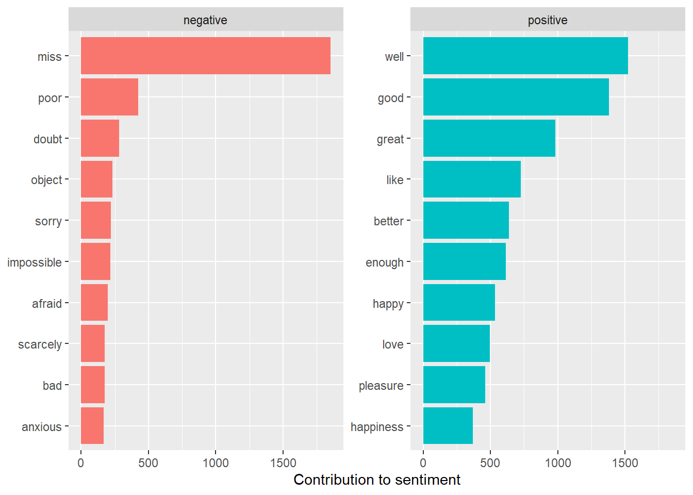
# stop words
custom_stop_words <- bind_rows(tibble(word = c("miss"),
lexicon = c("custom")),
stop_words)
custom_stop_words# A tibble: 1,150 × 2
word lexicon
<chr> <chr>
1 miss custom
2 a SMART
3 a's SMART
4 able SMART
5 about SMART
6 above SMART
7 according SMART
8 accordingly SMART
9 across SMART
10 actually SMART
# ℹ 1,140 more rowsWord Clouds
tidy_books %>%
anti_join(stop_words) %>%
count(word) %>%
with(wordcloud(word, n, max.words = 100))Joining with `by = join_by(word)`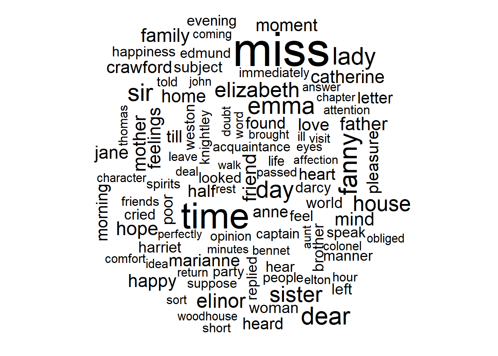
tidy_books %>%
inner_join(get_sentiments("bing")) %>%
count(word, sentiment, sort = TRUE) %>%
acast(word ~ sentiment, value.var = "n", fill = 0) %>%
comparison.cloud(
colors = c("gray20", "gray80"),
max.words = 100
)Joining with `by = join_by(word)`Warning in inner_join(., get_sentiments("bing")): Detected an unexpected many-to-many relationship between `x` and `y`.
ℹ Row 435434 of `x` matches multiple rows in `y`.
ℹ Row 5051 of `y` matches multiple rows in `x`.
ℹ If a many-to-many relationship is expected, set `relationship =
"many-to-many"` to silence this warning.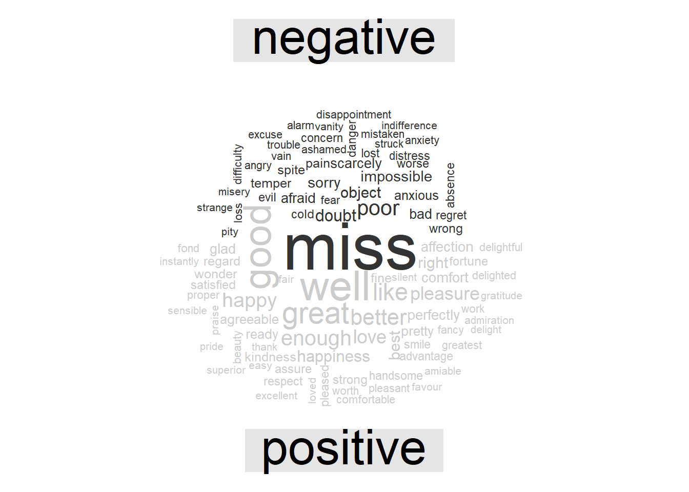
Looking at units beyond just words
p_and_p_sentences <- tibble(text = prideprejudice) %>%
unnest_tokens(sentence, text, token = "sentences")
p_and_p_sentences$sentence[2][1] "by jane austen"austen_chapters <- austen_books() %>%
group_by(book) %>%
unnest_tokens(chapter, text, token = "regex",
pattern = "Chapter|CHAPTER [\\dIVXLC]") %>%
ungroup()
austen_chapters %>%
group_by(book) %>%
summarise(chapters = n())# A tibble: 6 × 2
book chapters
<fct> <int>
1 Sense & Sensibility 51
2 Pride & Prejudice 62
3 Mansfield Park 49
4 Emma 56
5 Northanger Abbey 32
6 Persuasion 25bingnegative <- get_sentiments("bing") %>%
filter(sentiment == "negative")
wordcounts <- tidy_books %>%
group_by(book, chapter) %>%
summarize(words = n())`summarise()` has grouped output by 'book'. You can override using the
`.groups` argument.tidy_books %>%
semi_join(bingnegative) %>%
group_by(book, chapter) %>%
summarize(negativewords = n()) %>%
left_join(wordcounts, by = c("book", "chapter")) %>%
mutate(ratio = negativewords/words) %>%
filter(chapter != 0) %>%
slice_max(ratio, n = 1) %>%
ungroup()Joining with `by = join_by(word)`
`summarise()` has grouped output by 'book'. You can override using the
`.groups` argument.# A tibble: 6 × 5
book chapter negativewords words ratio
<fct> <int> <int> <int> <dbl>
1 Sense & Sensibility 43 161 3405 0.0473
2 Pride & Prejudice 34 111 2104 0.0528
3 Mansfield Park 46 173 3685 0.0469
4 Emma 15 151 3340 0.0452
5 Northanger Abbey 21 149 2982 0.0500
6 Persuasion 4 62 1807 0.0343Sentiment Analysis using Harry Potter
This took a bit as Harry Potter novels are copyrighted but I found a place where to get the analysis which is from here.
Note: To reproduce this you will need to use the following codeblock:
# if (packageVersion("devtools") < 1.6) {
# install.packages("devtools")
# }
#
# devtools::install_github("bradleyboehmke/harrypotter")This will load the package harrypotter which contains the Harry Potter novels.
library(harrypotter)The following books that are available in the harrypotter package are:
philospophers_stone: Harry Potter and the Philosopher’s Stonechamber_of_secrets: Harry Potter and the Chamber of Secretsprisoner_of_azkaban: Harry Potter and the Prisoner of Azkabangoblet_of_fire: Harry Potter and the Goblet of Fireorder_of_the_phoenix: Harry Potter and the Order of the Phoenixhalf_blood_prince: Harry Potter and the Half-Blood Princedeathly_hallows: Harry Potter and the Deathly Hallows
hpbooks <- c("Philosopher's Stone", "Chamber of Secrets", "Prisoner of Azkaban", "Goblet of Fire", "Order of the Phoenix", "Half-Blood Prince", "Deathly Hallows")
books <- list(philo = philosophers_stone, chamber = chamber_of_secrets, prisoner = prisoner_of_azkaban, goblet = goblet_of_fire, order = order_of_the_phoenix, half = half_blood_prince, deathly = deathly_hallows)
series <- tibble()
for (i in seq_along(hpbooks)) {
clean <- tibble(chapter = seq_along(books[[i]]),
text = books[[i]]) %>%
unnest_tokens(word, text) %>%
mutate(book = hpbooks[i]) %>%
select(book, everything())
series <- rbind(series, clean)
}
series$book <- factor(series$book, levels = rev(hpbooks))
series# A tibble: 1,089,427 × 3
book chapter word
<fct> <int> <chr>
1 Philosopher's Stone 1 the
2 Philosopher's Stone 1 boy
3 Philosopher's Stone 1 who
4 Philosopher's Stone 1 lived
5 Philosopher's Stone 1 mr
6 Philosopher's Stone 1 and
7 Philosopher's Stone 1 mrs
8 Philosopher's Stone 1 dursley
9 Philosopher's Stone 1 of
10 Philosopher's Stone 1 number
# ℹ 1,089,417 more rowsSentiment analysis with inner_join
This code block will perform sentiment analysis with an inner join across the Harry Potter series.
series %>%
right_join(get_sentiments("nrc")) %>%
filter(!is.na(sentiment)) %>%
count(sentiment, sort = TRUE)Joining with `by = join_by(word)`Warning in right_join(., get_sentiments("nrc")): Detected an unexpected many-to-many relationship between `x` and `y`.
ℹ Row 15 of `x` matches multiple rows in `y`.
ℹ Row 11469 of `y` matches multiple rows in `x`.
ℹ If a many-to-many relationship is expected, set `relationship =
"many-to-many"` to silence this warning.# A tibble: 10 × 2
sentiment n
<chr> <int>
1 negative 55096
2 positive 37767
3 sadness 34883
4 anger 32747
5 trust 23160
6 fear 21536
7 anticipation 20629
8 joy 13804
9 disgust 12861
10 surprise 12818Similar to the previous code blocks above, we will plot the sentiment scores accross the plot trajectory of each Harry Potter Novel.
series %>%
group_by(book) %>%
mutate(word_count = 1:n(),
index = word_count %/% 500 + 1 ) %>%
inner_join(get_sentiments("bing")) %>%
count(book, index = index, sentiment) %>%
ungroup() %>%
spread(sentiment, n, fill = 0) %>%
mutate(sentiment = positive - negative,
book = factor(book, levels = hpbooks)) %>%
ggplot(aes(index, sentiment, fill = book)) +
geom_bar(alpha = 0.5, stat = "identity", show.legend = FALSE) +
facet_wrap(~book, ncol = 2, scales = "free_x")Joining with `by = join_by(word)`Warning in inner_join(., get_sentiments("bing")): Detected an unexpected many-to-many relationship between `x` and `y`.
ℹ Row 41435 of `x` matches multiple rows in `y`.
ℹ Row 2698 of `y` matches multiple rows in `x`.
ℹ If a many-to-many relationship is expected, set `relationship =
"many-to-many"` to silence this warning.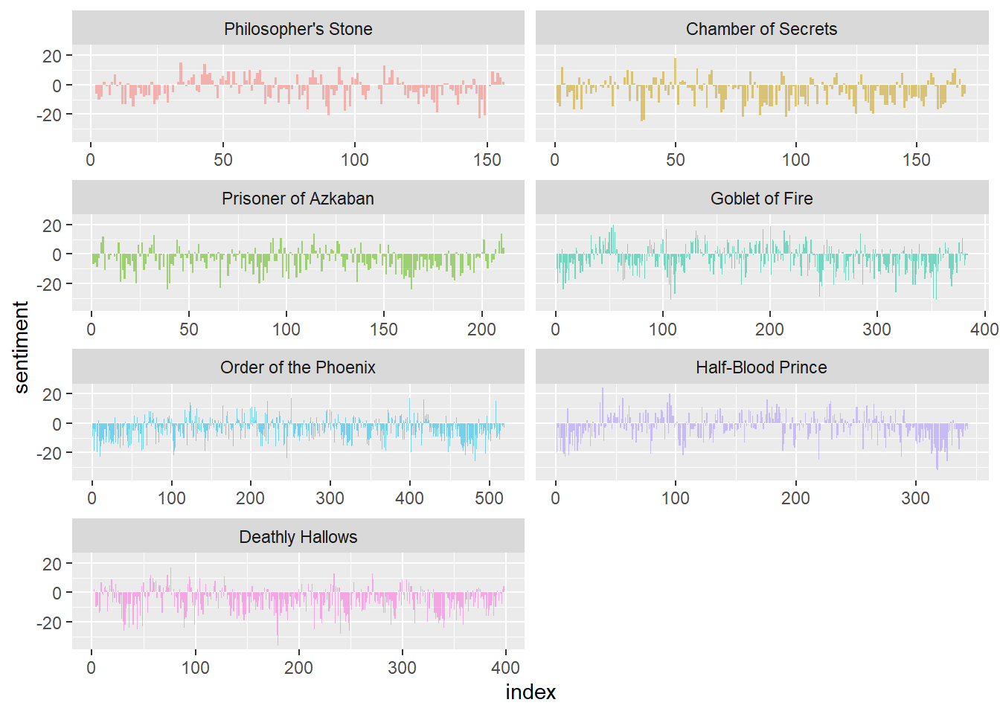
Analysis of books
This code block will analyze the Harry Potter series using affin, bing and nrc sentiment dictionaries.
afinn <- series %>%
group_by(book) %>%
mutate(word_count = 1:n(),
index = word_count %/% 500 + 1) %>%
inner_join(get_sentiments("afinn")) %>%
group_by(book, index) %>%
summarise(sentiment = sum(value)) %>%
mutate(method = "AFINN")Joining with `by = join_by(word)`
`summarise()` has grouped output by 'book'. You can override using the
`.groups` argument.bing_and_nrc <- bind_rows(series %>%
group_by(book) %>%
mutate(word_count = 1:n(),
index = word_count %/% 500 + 1) %>%
inner_join(get_sentiments("bing")) %>%
mutate(method = "Bing"),
series %>%
group_by(book) %>%
mutate(word_count = 1:n(),
index = word_count %/% 500 + 1) %>%
inner_join(get_sentiments("nrc") %>%
filter(sentiment %in% c("positive", "negative"))) %>%
mutate(method = "NRC")) %>%
count(book, method, index = index , sentiment) %>%
ungroup() %>%
spread(sentiment, n, fill = 0) %>%
mutate(sentiment = positive - negative) %>%
select(book, index, method, sentiment)Joining with `by = join_by(word)`Warning in inner_join(., get_sentiments("bing")): Detected an unexpected many-to-many relationship between `x` and `y`.
ℹ Row 41435 of `x` matches multiple rows in `y`.
ℹ Row 2698 of `y` matches multiple rows in `x`.
ℹ If a many-to-many relationship is expected, set `relationship =
"many-to-many"` to silence this warning.Joining with `by = join_by(word)`Warning in inner_join(., get_sentiments("nrc") %>% filter(sentiment %in% : Detected an unexpected many-to-many relationship between `x` and `y`.
ℹ Row 3334 of `x` matches multiple rows in `y`.
ℹ Row 4664 of `y` matches multiple rows in `x`.
ℹ If a many-to-many relationship is expected, set `relationship =
"many-to-many"` to silence this warning.bind_rows(afinn,
bing_and_nrc) %>%
ungroup() %>%
mutate(book = factor(book, levels = hpbooks)) %>%
ggplot(aes(index, sentiment, fill = method)) +
geom_bar(alpha = 0.8, stat = "identity", show.legend = FALSE) +
facet_grid(book ~ method)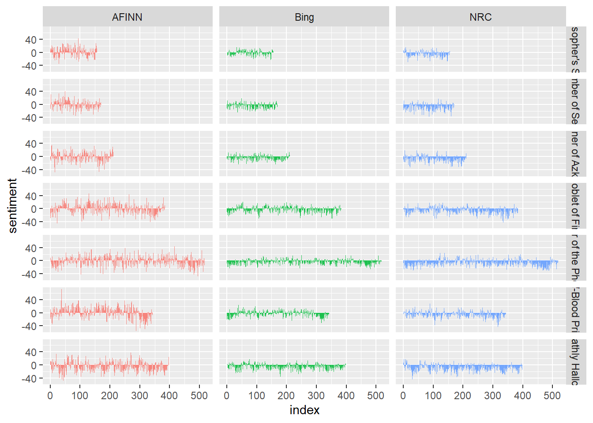
Most common positive and negative words
This code block will show the most common positive and negative words in the Harry Potter series.
bing_word_counts <- series %>%
inner_join(get_sentiments("bing")) %>%
count(word, sentiment, sort = TRUE) %>%
ungroup()Joining with `by = join_by(word)`Warning in inner_join(., get_sentiments("bing")): Detected an unexpected many-to-many relationship between `x` and `y`.
ℹ Row 41435 of `x` matches multiple rows in `y`.
ℹ Row 2698 of `y` matches multiple rows in `x`.
ℹ If a many-to-many relationship is expected, set `relationship =
"many-to-many"` to silence this warning.bing_word_counts# A tibble: 3,313 × 3
word sentiment n
<chr> <chr> <int>
1 like positive 2416
2 well positive 1969
3 right positive 1643
4 good positive 1065
5 dark negative 1034
6 great positive 877
7 death negative 757
8 magic positive 606
9 better positive 533
10 enough positive 509
# ℹ 3,303 more rowsbing_word_counts %>%
group_by(sentiment) %>%
slice_max(n, n = 10) %>%
ungroup() %>%
mutate(word = reorder(word, n)) %>%
ggplot(aes(n, word, fill = sentiment)) +
geom_col(show.legend = FALSE) +
facet_wrap(~sentiment, scales = "free_y") +
labs(x = "Contribution to sentiment",
y = NULL)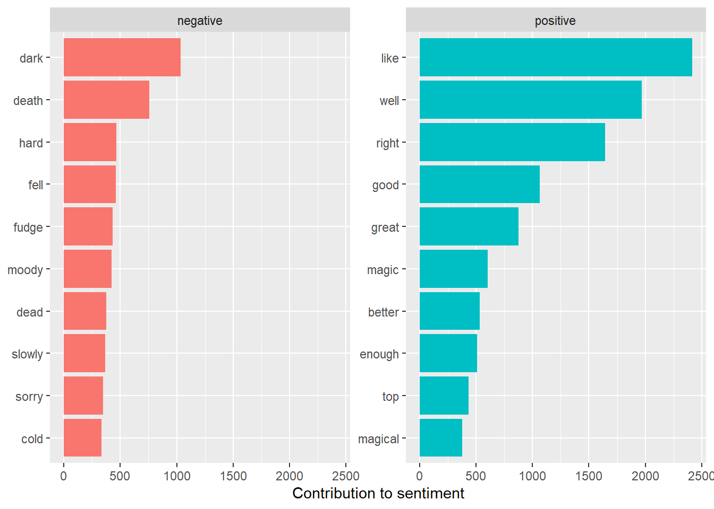
Stopwords
We will now create stop words for the Harry Potter series. Since there is one negative word that should not be there, fudge, we will add it to the custom stop words.
custom_stop_words <- bind_rows(tibble(word = c("fudge"),
lexicon = c("custom")),
stop_words)
custom_stop_words# A tibble: 1,150 × 2
word lexicon
<chr> <chr>
1 fudge custom
2 a SMART
3 a's SMART
4 able SMART
5 about SMART
6 above SMART
7 according SMART
8 accordingly SMART
9 across SMART
10 actually SMART
# ℹ 1,140 more rowsWord Clouds
This code block will create word clouds for the Harry Potter series.
series %>%
inner_join(get_sentiments("bing")) %>%
count(word, sentiment, sort = TRUE) %>%
acast(word ~ sentiment, value.var = "n", fill = 0) %>%
comparison.cloud(colors = c("gray20", "gray80"),
max.words = 100)Joining with `by = join_by(word)`Warning in inner_join(., get_sentiments("bing")): Detected an unexpected many-to-many relationship between `x` and `y`.
ℹ Row 41435 of `x` matches multiple rows in `y`.
ℹ Row 2698 of `y` matches multiple rows in `x`.
ℹ If a many-to-many relationship is expected, set `relationship =
"many-to-many"` to silence this warning.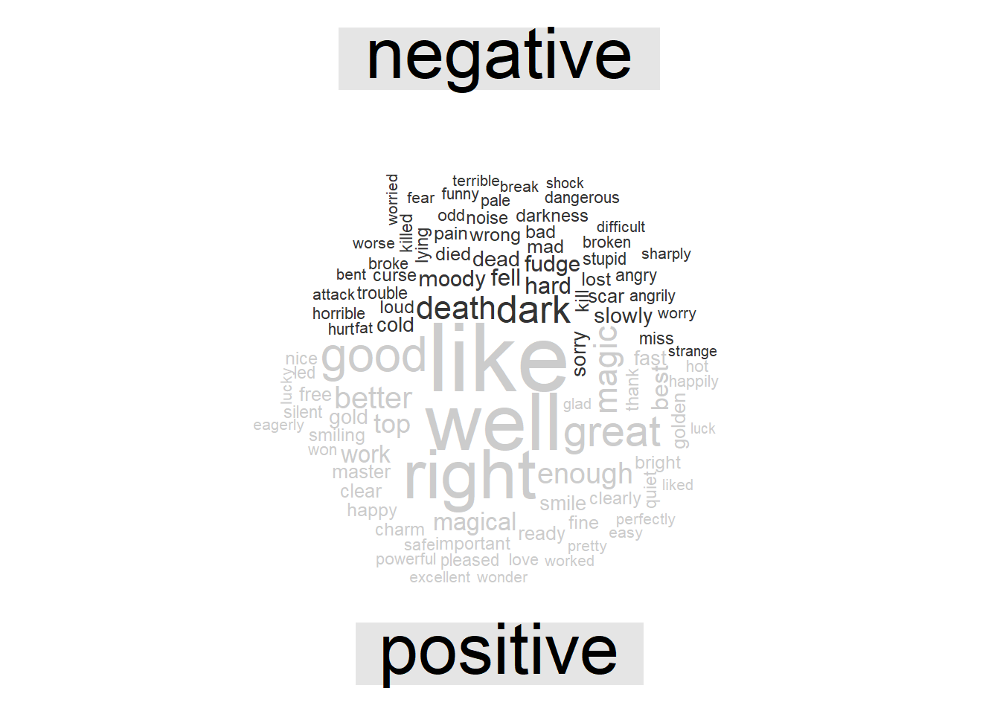
Looking at units beyond just words
This code block will look at units beyond just words in the Harry Potter series.
order_of_the_phoenix_sentences <- tibble(text = order_of_the_phoenix) %>%
unnest_tokens(sentence, text, token = "sentences")
order_of_the_phoenix_sentences$sentence[2][1] "cars that were usually gleaming stood dusty in their drives and lawns that were once emerald green lay parched and yellowing - 'for the use of hosepipes had been banned due to drought."austen_chapters <- austen_books() %>%
group_by(book) %>%
unnest_tokens(chapter, text, token = "regex",
pattern = "Chapter|CHAPTER [\\dIVXLC]") %>%
ungroup()
austen_chapters %>%
group_by(book) %>%
summarise(chapters = n())# A tibble: 6 × 2
book chapters
<fct> <int>
1 Sense & Sensibility 51
2 Pride & Prejudice 62
3 Mansfield Park 49
4 Emma 56
5 Northanger Abbey 32
6 Persuasion 25bingnegative <- get_sentiments("bing") %>%
filter(sentiment == "negative")
wordcounts <- tidy_books %>%
group_by(book, chapter) %>%
summarize(words = n())`summarise()` has grouped output by 'book'. You can override using the
`.groups` argument.tidy_books %>%
semi_join(bingnegative) %>%
group_by(book, chapter) %>%
summarize(negativewords = n()) %>%
left_join(wordcounts, by = c("book", "chapter")) %>%
mutate(ratio = negativewords/words) %>%
filter(chapter != 0) %>%
slice_max(ratio, n = 1) %>%
ungroup()Joining with `by = join_by(word)`
`summarise()` has grouped output by 'book'. You can override using the
`.groups` argument.# A tibble: 6 × 5
book chapter negativewords words ratio
<fct> <int> <int> <int> <dbl>
1 Sense & Sensibility 43 161 3405 0.0473
2 Pride & Prejudice 34 111 2104 0.0528
3 Mansfield Park 46 173 3685 0.0469
4 Emma 15 151 3340 0.0452
5 Northanger Abbey 21 149 2982 0.0500
6 Persuasion 4 62 1807 0.0343This code block will analyze the book The Order of the Phoenix.
opbook <- c("Order of the Phoenix")
opbooks <- list(order = order_of_the_phoenix)
series <- tibble()
for(i in seq_along(opbook)) {
cleand <- tibble(chapter = seq_along(opbooks[[i]]),
text = opbooks[[i]]) %>%
unnest_tokens(word, text) %>%
mutate(book = opbook[i]) %>%
select(book, everything())
series <- rbind(series, cleand)
}
series$book <- factor(series$book, levels = rev(opbook))
series# A tibble: 258,789 × 3
book chapter word
<fct> <int> <chr>
1 Order of the Phoenix 1 dudley
2 Order of the Phoenix 1 demented
3 Order of the Phoenix 1 the
4 Order of the Phoenix 1 hottest
5 Order of the Phoenix 1 day
6 Order of the Phoenix 1 of
7 Order of the Phoenix 1 the
8 Order of the Phoenix 1 summer
9 Order of the Phoenix 1 so
10 Order of the Phoenix 1 far
# ℹ 258,779 more rowsSentiment analysis with inner_join
This code block will perform sentiment analysis with an inner join across the Harry Potter book The Order of the Phoenix.
afinn <- series %>%
group_by(book) %>%
mutate(word_count = 1:n(),
index = word_count %/% 500 + 1) %>%
inner_join(get_sentiments("afinn")) %>%
group_by(book, index) %>%
summarise(sentiment = sum(value)) %>%
mutate(method = "AFINN")Joining with `by = join_by(word)`
`summarise()` has grouped output by 'book'. You can override using the
`.groups` argument.bing_and_nrc <- bind_rows(series %>%
group_by(book) %>%
mutate(word_count = 1:n(),
index = word_count %/% 500 + 1) %>%
inner_join(get_sentiments("bing")) %>%
mutate(method = "Bing"),
series %>%
group_by(book) %>%
mutate(word_count = 1:n(),
index = word_count %/% 500 + 1) %>%
inner_join(get_sentiments("nrc") %>%
filter(sentiment %in% c("positive", "negative"))) %>%
mutate(method = "NRC")) %>%
count(book, method, index = index , sentiment) %>%
ungroup() %>%
spread(sentiment, n, fill = 0) %>%
mutate(sentiment = positive - negative) %>%
select(book, index, method, sentiment)Joining with `by = join_by(word)`Warning in inner_join(., get_sentiments("bing")): Detected an unexpected many-to-many relationship between `x` and `y`.
ℹ Row 15507 of `x` matches multiple rows in `y`.
ℹ Row 3905 of `y` matches multiple rows in `x`.
ℹ If a many-to-many relationship is expected, set `relationship =
"many-to-many"` to silence this warning.Joining with `by = join_by(word)`Warning in inner_join(., get_sentiments("nrc") %>% filter(sentiment %in% : Detected an unexpected many-to-many relationship between `x` and `y`.
ℹ Row 2015 of `x` matches multiple rows in `y`.
ℹ Row 2406 of `y` matches multiple rows in `x`.
ℹ If a many-to-many relationship is expected, set `relationship =
"many-to-many"` to silence this warning.bind_rows(afinn,
bing_and_nrc) %>%
ungroup() %>%
mutate(book = factor(book, levels = opbook)) %>%
ggplot(aes(index, sentiment, fill = method)) +
geom_bar(alpha = 0.8, stat = "identity", show.legend = FALSE) +
facet_wrap(~method, ncol = 1, scales = "free_y")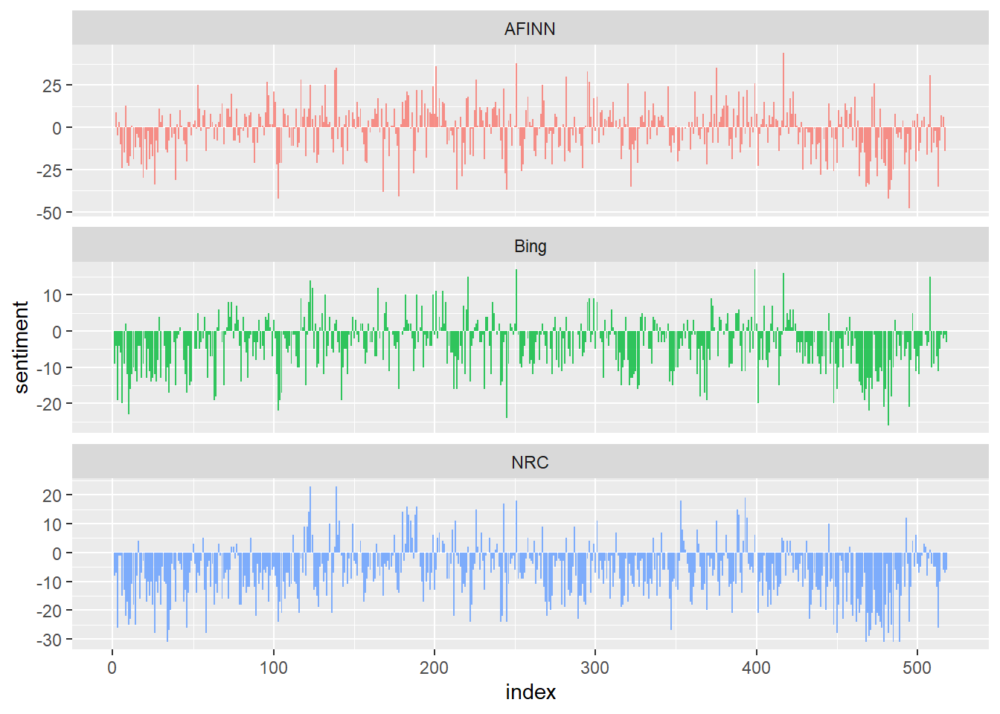
Most common positive and negative words
This code block will show the most common positive and negative words in the Harry Potter book The Order of the Phoenix.
bing_word_counts <- series %>%
inner_join(get_sentiments("bing")) %>%
count(word, sentiment, sort = TRUE) %>%
ungroup()Joining with `by = join_by(word)`Warning in inner_join(., get_sentiments("bing")): Detected an unexpected many-to-many relationship between `x` and `y`.
ℹ Row 15507 of `x` matches multiple rows in `y`.
ℹ Row 3905 of `y` matches multiple rows in `x`.
ℹ If a many-to-many relationship is expected, set `relationship =
"many-to-many"` to silence this warning.bing_word_counts# A tibble: 2,081 × 3
word sentiment n
<chr> <chr> <int>
1 well positive 646
2 like positive 545
3 right positive 432
4 good positive 253
5 dark negative 225
6 great positive 195
7 fudge negative 162
8 death negative 161
9 magic positive 157
10 enough positive 130
# ℹ 2,071 more rowsbing_word_counts %>%
group_by(sentiment) %>%
slice_max(n, n = 10) %>%
ungroup() %>%
mutate(word = reorder(word, n)) %>%
ggplot(aes(n, word, fill = sentiment)) +
geom_col(show.legend = FALSE) +
facet_wrap(~sentiment, scales = "free_y") +
labs(x = "Contribution to sentiment",
y = NULL)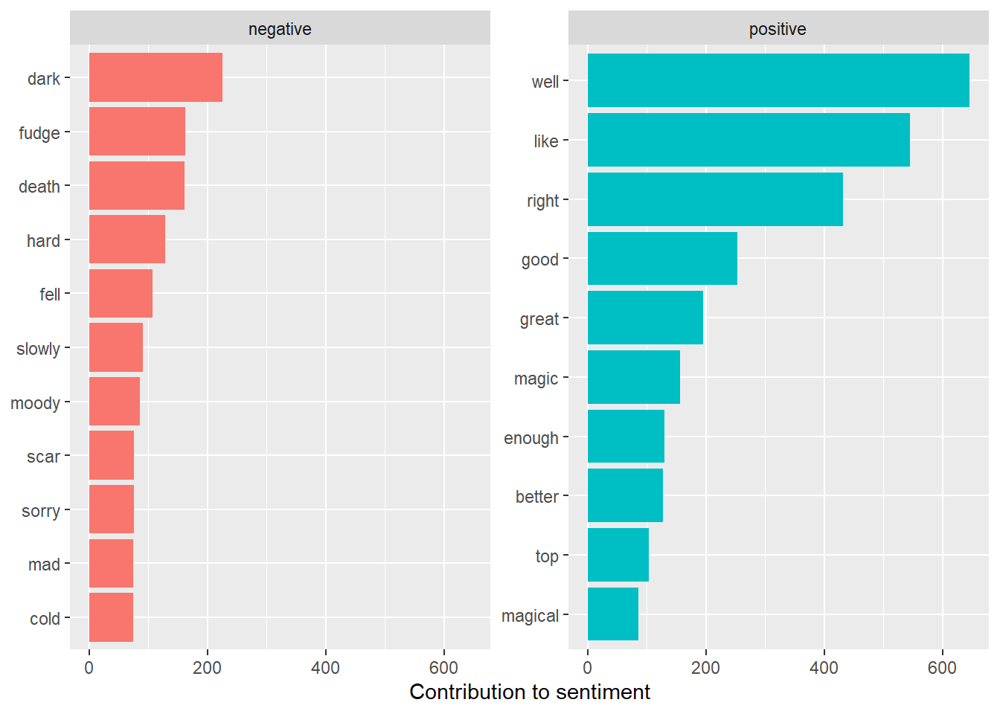
Stopwords
We will now create stop words for the Harry Potter book The Order of the Phoenix. Since there is one negative word that should not be there, fudge, we will add it to the custom stop words.
custom_stop_words <- bind_rows(tibble(word = c("fudge"),
lexicon = c("custom")),
stop_words)
custom_stop_words# A tibble: 1,150 × 2
word lexicon
<chr> <chr>
1 fudge custom
2 a SMART
3 a's SMART
4 able SMART
5 about SMART
6 above SMART
7 according SMART
8 accordingly SMART
9 across SMART
10 actually SMART
# ℹ 1,140 more rowsWord Clouds
This code block will create word clouds for the Harry Potter book The Order of the Phoenix.
series %>%
inner_join(get_sentiments("bing")) %>%
count(word, sentiment, sort = TRUE) %>%
acast(word ~ sentiment, value.var = "n", fill = 0) %>%
comparison.cloud(colors = c("gray20", "gray80"),
max.words = 100)Joining with `by = join_by(word)`Warning in inner_join(., get_sentiments("bing")): Detected an unexpected many-to-many relationship between `x` and `y`.
ℹ Row 15507 of `x` matches multiple rows in `y`.
ℹ Row 3905 of `y` matches multiple rows in `x`.
ℹ If a many-to-many relationship is expected, set `relationship =
"many-to-many"` to silence this warning.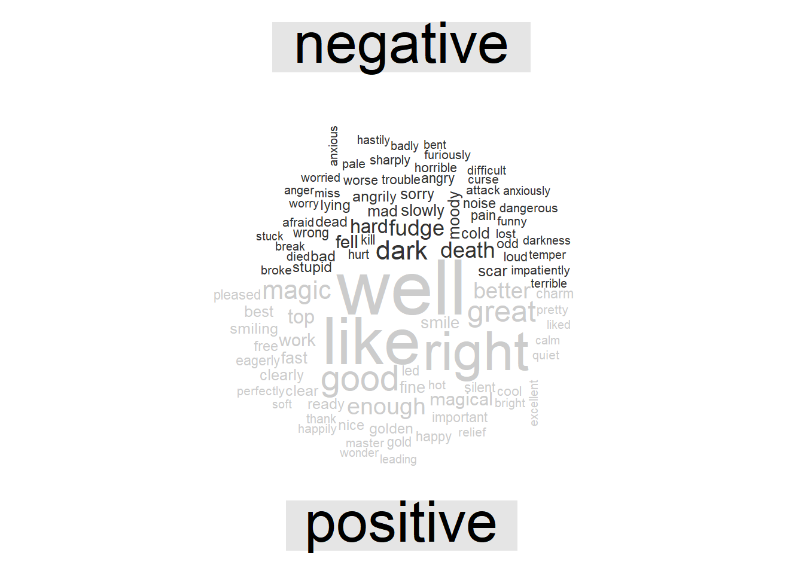
Looking at units beyond just words
This code block will look at units beyond just words in the Harry Potter book The Order of the Phoenix.
order_of_the_phoenix_sentences <- tibble(text = order_of_the_phoenix) %>%
unnest_tokens(sentence, text, token = "sentences")
order_of_the_phoenix_sentences$sentence[2][1] "cars that were usually gleaming stood dusty in their drives and lawns that were once emerald green lay parched and yellowing - 'for the use of hosepipes had been banned due to drought."austen_chapters <- austen_books() %>%
group_by(book) %>%
unnest_tokens(chapter, text, token = "regex",
pattern = "Chapter|CHAPTER [\\dIVXLC]") %>%
ungroup()
austen_chapters %>%
group_by(book) %>%
summarise(chapters = n())# A tibble: 6 × 2
book chapters
<fct> <int>
1 Sense & Sensibility 51
2 Pride & Prejudice 62
3 Mansfield Park 49
4 Emma 56
5 Northanger Abbey 32
6 Persuasion 25bingnegative <- get_sentiments("bing") %>%
filter(sentiment == "negative")
wordcounts <- tidy_books %>%
group_by(book, chapter) %>%
summarize(words = n())`summarise()` has grouped output by 'book'. You can override using the
`.groups` argument.tidy_books %>%
semi_join(bingnegative) %>%
group_by(book, chapter) %>%
summarize(negativewords = n()) %>%
left_join(wordcounts, by = c("book", "chapter")) %>%
mutate(ratio = negativewords/words) %>%
filter(chapter != 0) %>%
slice_max(ratio, n = 1) %>%
ungroup()Joining with `by = join_by(word)`
`summarise()` has grouped output by 'book'. You can override using the
`.groups` argument.# A tibble: 6 × 5
book chapter negativewords words ratio
<fct> <int> <int> <int> <dbl>
1 Sense & Sensibility 43 161 3405 0.0473
2 Pride & Prejudice 34 111 2104 0.0528
3 Mansfield Park 46 173 3685 0.0469
4 Emma 15 151 3340 0.0452
5 Northanger Abbey 21 149 2982 0.0500
6 Persuasion 4 62 1807 0.0343Loughran Lexicon Sentiment Analysis
This code block will perform sentiment analysis using the Loughran lexicon.
loughran <- get_sentiments("loughran")
loughran# A tibble: 3,805 × 2
word sentiment
<chr> <chr>
1 abandon negative
2 abandoned negative
3 abandoning negative
4 abandonment negative
5 abandonments negative
6 abandons negative
7 abdicated negative
8 abdicates negative
9 abdicating negative
10 abdication negative
# ℹ 3,795 more rowsWe will now analyze the Harry Potter series using the Loughran lexicon.
loughran <- bind_rows(series %>%
group_by(book) %>%
mutate(word_count = 1:n(),
index = word_count %/% 500 + 1) %>%
inner_join(get_sentiments("loughran") %>%
filter(sentiment %in% c("positive", "negative"))) %>%
mutate(method = "Loughran")) %>%
count(book, method, index = index , sentiment) %>%
ungroup() %>%
spread(sentiment, n, fill = 0) %>%
mutate(sentiment = positive - negative) %>%
select(book, index, method, sentiment)Joining with `by = join_by(word)`afinn <- series %>%
group_by(book) %>%
mutate(word_count = 1:n(),
index = word_count %/% 500 + 1) %>%
inner_join(get_sentiments("afinn")) %>%
group_by(book, index) %>%
summarise(sentiment = sum(value)) %>%
mutate(method = "AFINN")Joining with `by = join_by(word)`
`summarise()` has grouped output by 'book'. You can override using the
`.groups` argument.bing_and_nrc <- bind_rows(series %>%
group_by(book) %>%
mutate(word_count = 1:n(),
index = word_count %/% 500 + 1) %>%
inner_join(get_sentiments("bing")) %>%
mutate(method = "Bing"),
series %>%
group_by(book) %>%
mutate(word_count = 1:n(),
index = word_count %/% 500 + 1) %>%
inner_join(get_sentiments("nrc") %>%
filter(sentiment %in% c("positive", "negative"))) %>%
mutate(method = "NRC")) %>%
count(book, method, index = index , sentiment) %>%
ungroup() %>%
spread(sentiment, n, fill = 0) %>%
mutate(sentiment = positive - negative) %>%
select(book, index, method, sentiment)Joining with `by = join_by(word)`Warning in inner_join(., get_sentiments("bing")): Detected an unexpected many-to-many relationship between `x` and `y`.
ℹ Row 15507 of `x` matches multiple rows in `y`.
ℹ Row 3905 of `y` matches multiple rows in `x`.
ℹ If a many-to-many relationship is expected, set `relationship =
"many-to-many"` to silence this warning.Joining with `by = join_by(word)`Warning in inner_join(., get_sentiments("nrc") %>% filter(sentiment %in% : Detected an unexpected many-to-many relationship between `x` and `y`.
ℹ Row 2015 of `x` matches multiple rows in `y`.
ℹ Row 2406 of `y` matches multiple rows in `x`.
ℹ If a many-to-many relationship is expected, set `relationship =
"many-to-many"` to silence this warning.bind_rows(afinn,
bing_and_nrc, loughran) %>%
ggplot(aes(index, sentiment, fill = method)) +
geom_col(show.legend = FALSE) +
facet_wrap(~method, ncol = 1, scales = "free_y")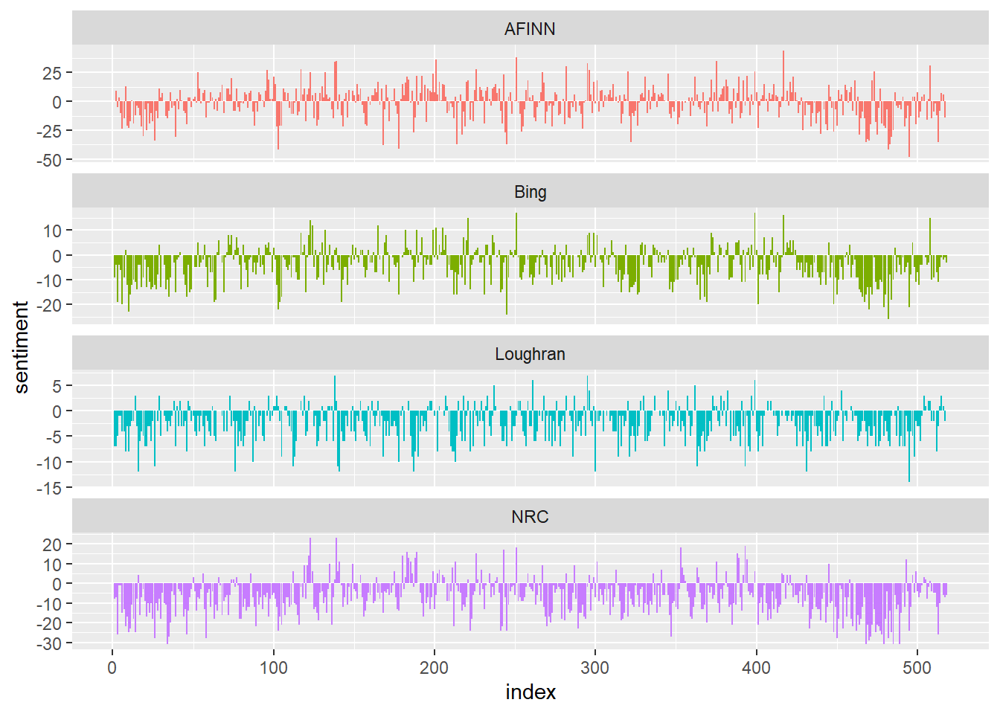
Conclusion
In this assignment, we performed sentiment analysis on the Harry Potter series using the AFINN, Bing et al., and NRC sentiment dictionaries. We also used the Loughran lexicon to perform sentiment analysis on the Harry Potter series. We also created word clouds for the Harry Potter series and the Harry Potter book The Order of the Phoenix. We also looked at units beyond just words in the Harry Potter series and the Harry Potter book The Order of the Phoenix.